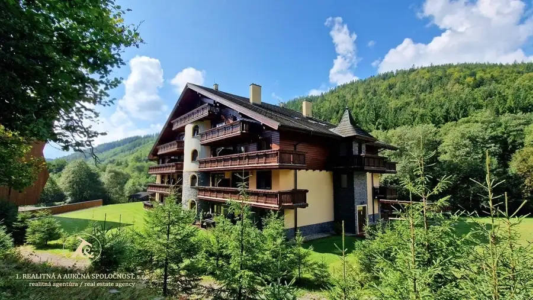
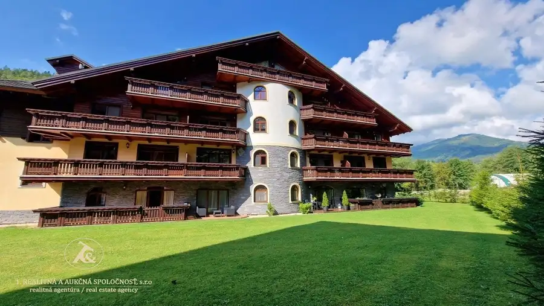
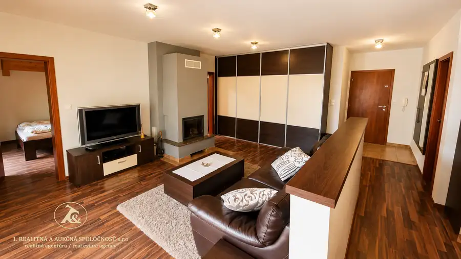
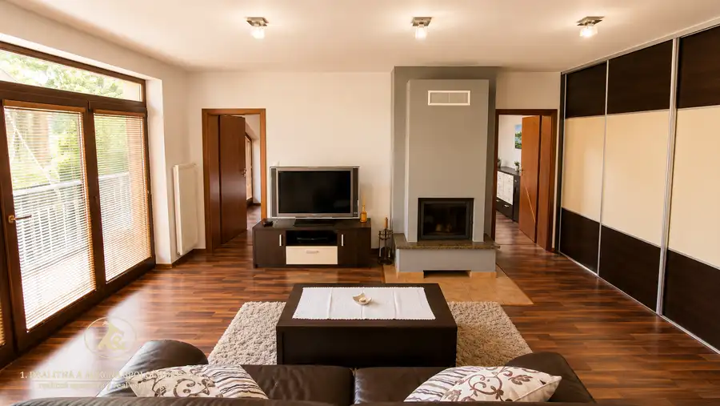
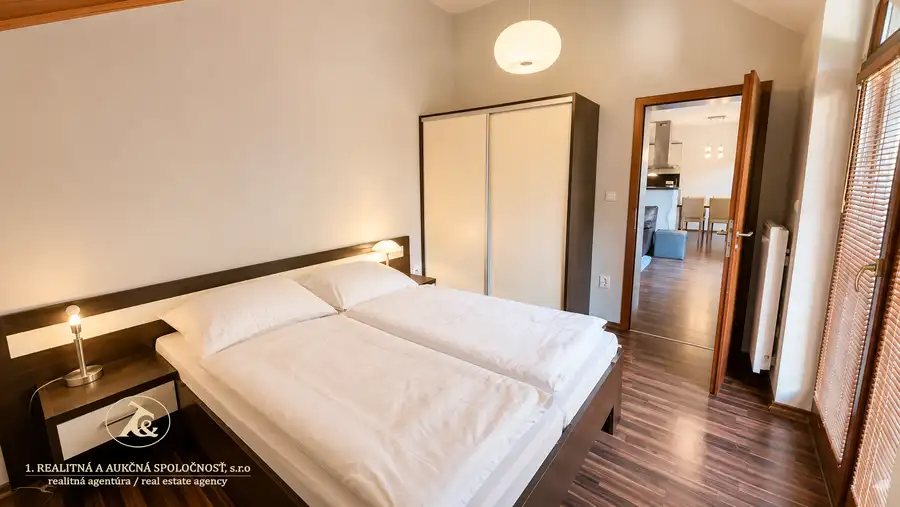
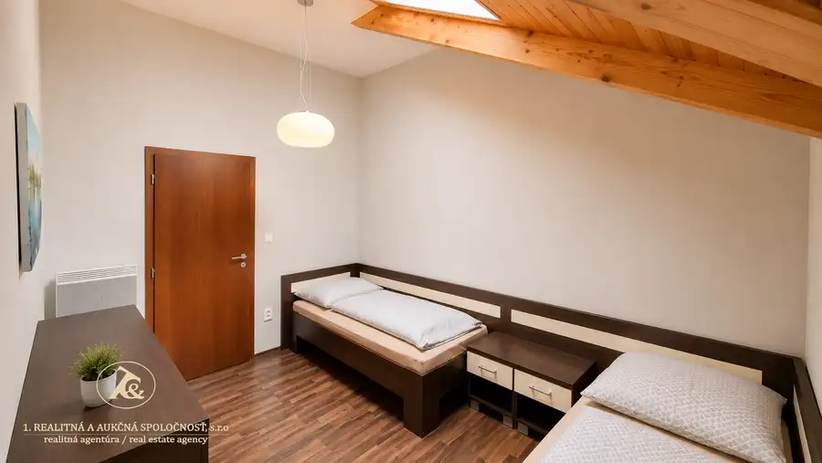

3-izbový apartmán s krbom, terasou a garážovým státím – Tále, Nízke Tatry
Bystrá






- Plocha73 m²
- StavNovostavba
- VlastníctvoOsobné
O nehnuteľnosti
Ponúkame na predaj štýlový 3-izbový apartmán nachádzajúci sa v uzavretom areáli apartmánových domov v obľúbenom lyžiarsko-turistickom stredisku Tále, v srdci Národného parku Nízke Tatry. Lokalita v malebnej Bystrianskej doline ponúka jedinečné spojenie prírody, športového vyžitia a komfortného oddychu počas celého roka.Apartmánový komplex patrí medzi najdlhšie fungujúce a najlepšie udržiavané rezidenčné komplexy na južnej strane Nízkych Tatier. Nachádza sa pri horskom potoku Bystrianka, obklopený hustými ihličnato-listnatými lesmi a s výhľadmi na končiare Nízkych Tatier.Dispozícia a vybavenieApartmán sa nachádza na 4. poschodí z 5 v zateplenom murovanom bytovom dome skolaudovanom v roku 2009, v lokalite Tále – Bystrá, okres Brezno. Dispozične pozostáva zo zádveria so vstavanou skriňou, priestrannej obývacej izby s krbom, kuchyne s kuchynskou linkou a vstavanými spotrebičmi, jedálenského kúta, spálne s manželskou posteľou a ďalšej samostatnej izby.Interiér je zariadený kvalitným nábytkom vyrobeným na mieru. Z obývacej izby aj zo spálne je priamy vstup na slnečnú terasu orientovanú na juhovýchod, ktorá sa tiahne takmer pozdĺž celého apartmánu a ponúka výhľady na okolitú prírodu.K apartmánu prislúcha aj pivnica – lyžiareň na prízemí bytového domu o výmere 2,6 m², vybavená sušičom na lyžiarky a stojanom na bicykle. Súčasťou predaja je aj garážové parkovacie miesto, pričom v bytovom dome je len obmedzený počet garážových státí.Vykurovanie je zabezpečené elektrickými konvektormi a podlahovým kúrením s rebríkovým radiátorom v kúpeľni.Lokalita a voľnočasové aktivityApartmán je ideálny na aktívne trávenie voľného času alebo ako investičná nehnuteľnosť. Priamo v stráženom areáli sa nachádza prístrešok na posedenie a grilovanie pre rezidentov.V blízkosti nájdete:tenisové kurtydetské ihriskoreštauráciu s tradičnou slovenskou kuchyňouwellness a vodný svet v Hoteli BystráHotely Partizán a StupkaLen 2 km od apartmánu sa nachádza lyžiarske stredisko Tále s večerným lyžovaním, umelým zasnežovaním a bežkárskymi traťami. Súčasťou strediska je aj 27-jamkové golfové ihrisko s detskou golfovou akadémiou.Náročnejší lyžiari ocenia blízkosť strediska Chopok Juh vzdialeného len 7 km, ktoré ponúka až 45 km zjazdoviek na južnej aj severnej strane Chopku a dostupnosť skibusom so zastávkou neďaleko apartmánu.Cena275 000 € (3 089,89 €/m²)Kontakt – viac informácií a dohodnutie obhliadkyMaklérka: Mgr. Gabriela Bártová📞 +421 903 473 103📧 gabriela.bartova@realitna.sk
Parametre
- Cellar area
- 2.6 m²
- Cena vrátane energií
- Nie
- Druh
- Apartmán
- Dátum zverejnenia
- 13. 05. 2026
- Plocha terasy v m2
- 16 m²
- Počet pivníc
- 1
- Stav nehnuteľnosti
- Novostavba
- Telekomunikácie
- Internet
- Terás
- 1
- Typ
- Predaj
- Vlastníctvo
- Osobné
- Vybavenie
- Terasa, Garáž, Pivnica, Výťah
- Vykurovanie
- Podlahové, Krb, Žiariče
- Úžitková plocha
- 73 m²